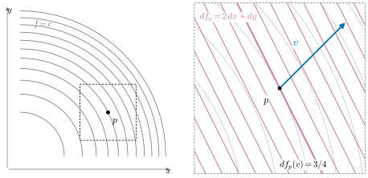
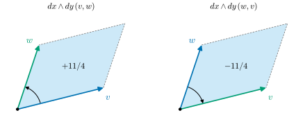
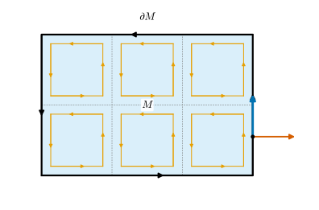
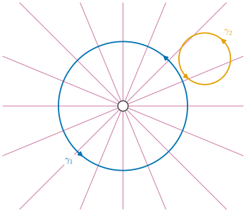

0.7 Differential Forms and Stokes's Theorem
Goals
- covector가 무엇이고 \(df\)가 왜 covector인지, reverse-mode 자동미분이 왜 covector를 끌어오는 계산인지 설명할 수 있다.
- 1-form의 line integral과 wedge product(signed area)를 계산할 수 있다.
- exterior derivative \(d\)와 Stokes's theorem이 gradient·curl·divergence와 미적분학의 적분 정리들을 하나로 묶는다는 것을 설명할 수 있다.
- closed form과 exact form의 차이가 공간의 구멍을 드러낸다는 것(de Rham cohomology)을 예로 보이고, Poisson image editing과 연결할 수 있다.
Prerequisites
- Section 0.6: tangent space, differential, chain rule (0.6.5), backpropagation 상자
- 학부 미적분: line integral, Green's theorem(깊이 보려면 Theorem 2.6.13), \(2 \times 2\) determinant
- (선택) dual space: Definition 1.3.1
Motivation
Section 0.6의 backpropagation 상자는 질문 하나를 남겼다. tangent vector는 differential을 따라 앞으로 밀려 가는데, gradient는 왜 행벡터가 되어 거꾸로 끌려오는가?
함수 \(f\colon M \to \R\)의 \(p\)에서의 미분을 생각해 보자. tangent vector \(v\)를 하나 주면 “\(v\) 방향으로 \(f\)가 얼마나 빨리 변하는가”라는 수 하나가 나온다. 이 수는 \(v\)에 대해 linear하다. 즉 \(df_p\)는 화살표가 아니라 화살표를 받아 수를 내주는 linear function이다. 우리가 gradient라고 부르는 \((\partial_1 f, \dots, \partial_n f)\)는 이 linear function의 coefficient를 늘어놓은 것이다. 이 절은 이런 “vector를 재는 도구”에서 출발해, 길이·넓이·부피를 재는 differential form, 그리고 미적분학의 기본정리를 모든 dimension으로 넓힌 Stokes's theorem까지 간다.
Covectors: Measuring Vectors
Definition 0.7.1 (covector and 1-form, simplified). tangent space \(T_pM\)에서 \(\R\)로 가는 linear map을 \(p\)에서의 covector(여벡터)라 하고, 그 전체를 cotangent space(여접공간) \(T_p^*M\)이라 한다. 곧 \(T_p^*M\)은 \(T_pM\)의 dual space(쌍대공간)다. 각 점 \(p\)에 covector \(\omega_p\)를 매끄럽게 하나씩 붙인 것을 1-form(1-형식)이라 한다. 정확한 정의는 cotangent bundle의 section으로 한다(Section 16.1).
함수 \(f\)의 미분 \(df\)는 1-form이고 \(df_p(v)\)는 \(v\) 방향의 directional derivative다. chart의 좌표 \(x^i\)도 함수이므로 \(dx^i\)가 1-form이며, \(dx^i(v) = v^i\)(\(v\)의 \(i\)번째 성분)이다. \(dx^1, \dots, dx^n\)은 \(T_p^*M\)의 basis이고
이다. 행벡터 \((\partial_1 f, \dots, \partial_n f)\)와 열벡터 \(v\)의 곱이다.

covector는 map을 따라 거꾸로 옮겨진다. smooth map \(F\colon M \to N\)과 \(N\)의 1-form \(\omega\)가 있으면 \(M\)의 tangent vector \(v\)를 먼저 \(dF_p\)로 \(N\)에 보낸 뒤 \(\omega\)로 잴 수 있다. 이것이 \(\omega\)의 pullback(당김) \(F^*\omega\)다:
둘째 식은 chain rule (0.6.5)을 covector의 말로 쓴 것이다. 성분으로는 행벡터에 Jacobian matrix를 오른쪽에서 곱한다. tangent vector의 성분이 chart를 바꿀 때 Jacobian matrix \(J\)로 바뀌면((0.6.4)), covector의 성분(행벡터)은 \(J^{-1}\)을 오른쪽에서 곱해 바뀐다. 그래야 \(\alpha(v)\)가 chart에 무관하다. 둘의 변환 규칙이 반대라서 vector는 contravariant(반변), covector는 covariant(공변)라 부른다(Chapter 1).
Line Integrals
1-form은 곡선을 따라 적분하기 위해 태어난 대상이다. 곡선 \(\gamma\colon [a, b] \to M\)의 각 순간에 velocity \(\gamma'(t)\)를 \(\omega\)로 재고 더한 것이 line integral(선적분)이다:
이 값은 곡선의 방향을 유지하는 reparametrization에 무관하고, 방향을 뒤집으면 부호가 바뀐다. 길이와 달리 \(\abs{\gamma'}\)를 쓰지 않으므로 inner product가 필요 없다. \(\omega\)가 어떤 함수의 미분 \(df\)라면 chain rule에 의해 \(df_{\gamma(t)}(\gamma'(t)) = (f \circ \gamma)'(t)\)이므로
이다. 미적분학의 기본정리 그대로다. 특히 closed curve를 따라 \(df\)를 적분하면 \(0\)이다.
Example 0.7.2 (\(x\,dy\) around the unit circle). \(\omega = x\,dy\)와 unit circle \(\gamma(t) = (\cos t, \sin t)\) (\(0 \le t \le 2\pi\), 반시계 방향)을 보자. \(\gamma'(t) = (-\sin t, \cos t)\)이므로 \(\omega_{\gamma(t)}(\gamma'(t)) = \cos t \cdot \cos t\)이고
\[ \oint_\gamma x\,dy = \int_0^{2\pi} \cos^2 t\, dt = \pi \]
이다. 이 값은 unit disk의 넓이와 같다. 우연이 아님을 아래 Stokes's theorem이 설명한다.
Verification: verify/v-0-7-forms.py
Wedge Products and Signed Area
1-form이 vector 하나를 재듯이, vector 두 개가 만드는 평행사변형을 재는 대상이 2-form이다. 두 1-form의 wedge product(쐐기곱) \(dx \wedge dy\)는
\[ (dx \wedge dy)(v, w) = v^1 w^2 - v^2 w^1 = \det\begin{pmatrix} v^1 & w^1 \\ v^2 & w^2 \end{pmatrix} \]
로 정의한다. \(v\)와 \(w\)가 만드는 평행사변형의 signed area(부호 있는 넓이)다(Figure 0.7.2). \(v\)에서 \(w\)로 반시계 방향으로 돌면 양수, 시계 방향이면 음수다. 그래서 \(dx \wedge dy = -dy \wedge dx\)이고 \(dx \wedge dx = 0\)이다. 이 study set은 \(dx^{i_1}\wedge\cdots\wedge dx^{i_k}(v_1, \dots, v_k) = \det\big(dx^{i_a}(v_b)\big)\)인 determinant 규약을 쓴다(Notation and Conventions). \(\R^3\)에서 \(dx \wedge dy \wedge dz(u, v, w) = \det(u\ v\ w)\)는 평행육면체의 signed volume이다. 이렇게 \(k\)개의 vector를 받아 alternating(교대)이고 multilinear인 값을 내는 것을 매끄럽게 붙인 것이 differential \(k\)-form(미분형식)이다.

2-form은 oriented surface 위에서 적분한다. \(\R^2\)의 영역 \(D\)에서 \(\int_D f\,dx \wedge dy = \iint_D f\,dx\,dy\)(반시계 방향 orientation)이다. 여기서 orientation(방향)은 각 tangent space에서 어느 basis 순서를 “양”으로 볼지를 연속적으로 고른 것이다. Möbius strip처럼 orientation을 고를 수 없는 manifold도 있다(Section 18.1).
The Exterior Derivative
함수(0-form) \(f\)의 미분이 1-form \(df\)였던 것처럼, \(k\)-form을 미분해 \((k+1)\)-form을 만드는 연산 \(d\)가 있다. 이것을 exterior derivative(외미분)라 한다. \(\R^2\)의 1-form에서는
이다. 괄호 안은 평면 vector field \((P, Q)\)의 curl, 곧 점 둘레의 단위 넓이당 회전량이다. \(\omega = df\)이면 \(P = f_x\), \(Q = f_y\)이고 \(f_{yx} = f_{xy}\)이므로 \(d(df) = 0\)이다. 일반적으로 언제나 \(d \circ d = 0\)이다. \(\R^3\)에서 표준 inner product와 orientation으로 1-form과 2-form을 vector field와 짝지으면, \(d\)는 익숙한 세 연산이 된다.
| \(d\) | form | vector calculus |
|---|---|---|
| 0-form → 1-form | \(df = f_x\,dx + f_y\,dy + f_z\,dz\) | \(\grad f\) |
| 1-form → 2-form | \(d(A\,dx + B\,dy + C\,dz)\) | \(\operatorname{curl}(A, B, C)\) |
| 2-form → 3-form | \(d(a\,dy\wedge dz + b\,dz\wedge dx + c\,dx\wedge dy)\) | \(\divg(a, b, c)\) |
\(d \circ d = 0\)은 \(\operatorname{curl}\grad f = 0\)과 \(\divg\operatorname{curl} V = 0\)을 한 번에 말한다. 또 \(d\)는 pullback과 교환한다(\(F^* d\omega = d F^*\omega\)). 그래서 \(d\)는 좌표에 무관하게 정의된다(Section 17.3).
Stokes's Theorem
Theorem 0.7.3 (Stokes's theorem). \(M\)이 compact이고 oriented인 \(n\)-dimensional smooth manifold with boundary이고, \(\omega\)가 \(M\) 위의 smooth \((n-1)\)-form이면
이다. boundary \(\partial M\)에는 바깥쪽 normal을 첫 번째로 두는 orientation(Stokes orientation)을 준다. 여기서는 manifold 위의 적분과 orientation의 정의를 생략하고 진술만 했다(Section 18.4).
“안쪽에서 일어난 변화를 모두 더하면 boundary에서 본 양과 같다”는 정리다. 미적분학의 적분 정리들이 모두 이것의 특수한 경우다.
- \(n = 1\), \(M = [a, b]\): \(\int_a^b f'(t)\,dt = f(b) - f(a)\), 그리고 (0.7.4)
- \(n = 2\), \(M \subseteq \R^2\): (0.7.5)를 넣으면 Green's theorem \(\iint_M (Q_x - P_y)\,dx\,dy = \oint_{\partial M} P\,dx + Q\,dy\)
- \(\R^3\) 안의 surface와 영역: 고전적인 Stokes's theorem과 divergence theorem(Section 18.5)
예를 들어 Example 0.7.2의 \(\omega = x\,dy\)는 \(d\omega = dx \wedge dy\)이므로, unit disk \(D\)에서 \(\int_D dx \wedge dy = \pi\)(넓이)와 \(\oint_{\partial D} x\,dy = \pi\)가 같은 것은 (0.7.6) 그 자체다.
Proof idea: \(M\)을 작은 조각으로 자른다. 작은 조각에서는 boundary를 한 바퀴 돈 \(\omega\)의 적분이 거의 “\(d\omega\)의 coefficient \(\times\) 넓이”다(평면에서는 (0.7.5)의 괄호가 단위 넓이당 회전량이라는 말이고, Taylor 전개로 확인한다). 이웃한 두 조각은 공유하는 변을 서로 반대 방향으로 돌기 때문에 안쪽 변의 기여는 모두 지워지고, 바깥 boundary만 남는다(Figure 0.7.3).

Section 0.5의 Gauss–Bonnet theorem도 “안쪽의 curvature = boundary와 topology”라는 같은 모양의 정리다. Chapter 26에서 Stokes's theorem을 써서 다시 증명한다(Section 26.1).
Closed Forms, Exact Forms, and Holes
\(d\omega = 0\)인 form을 closed form(닫힌 형식), 어떤 \(\eta\)에 대해 \(\omega = d\eta\)인 form을 exact form(완전 형식)이라 한다. \(d \circ d = 0\)이므로 exact form은 모두 closed다. 반대는 어떨까?
Example 0.7.4 (a closed form that is not exact). 구멍 뚫린 평면 \(\R^2 \setminus \{0\}\)에서
를 보자. (0.7.5)로 계산하면 \(d\omega = 0\)이므로 closed다. 그런데 unit circle을 따라 적분하면 \(\omega_{\gamma(t)}(\gamma'(t)) = \sin^2 t + \cos^2 t = 1\)이므로 \(\oint \omega = 2\pi \ne 0\)이다. \(\omega = df\)였다면 (0.7.4)에 의해 \(0\)이어야 하므로 \(\omega\)는 exact가 아니다. 국소적으로는 \(\omega = d\theta\)(\(\theta\)는 polar angle)이지만, \(\theta\)를 원점 둘레 전체에서 연속인 함수로 정할 수는 없다. 한 바퀴 돌면 \(2\pi\)가 늘기 때문이다(Figure 0.7.4).
Verification: verify/v-0-7-forms.py

closed인데 exact가 아닌 form은 공간의 구멍 때문에 생긴다. 실제로 \(\R^n\)이나 star-shaped(별 모양) 영역에서는 closed form이 모두 exact다. 이것이 Poincaré lemma(푸앵카레 보조정리)다(Section 19.2). 그래서 “closed이지만 exact가 아닌 것”을 세면 구멍을 셀 수 있다.
Definition 0.7.5 (de Rham cohomology). \(M\)의 closed \(k\)-form 전체를 exact \(k\)-form 전체로 나눈 vector space
를 \(M\)의 \(k\)번째 de Rham cohomology(드람 코호몰로지)라 한다. 두 closed form의 차이가 exact이면 같은 원소로 본다.
몇 가지 값은 다음과 같다(Section 19.5). \(H^0_{\mathrm{dR}}(M)\)의 dimension은 \(M\)의 connected component의 개수다. \(H^1_{\mathrm{dR}}(\R^2 \setminus \{0\}) \cong \R\)이고 \([\omega]\)가 basis다. sphere는 \(H^1_{\mathrm{dR}}(S^2) = 0\)이고, torus는 두 방향의 고리 때문에 \(H^1_{\mathrm{dR}}(T^2) \cong \R^2\)이다. compact manifold에서는 dimension의 부호를 바꾼 합 \(\sum_k (-1)^k \dim H^k_{\mathrm{dR}}(M)\)이 Euler characteristic \(\chi(M)\)이다. \(S^2\)는 \(1 - 0 + 1 = 2\), \(T^2\)는 \(1 - 2 + 1 = 0\)으로 Section 0.5의 Gauss–Bonnet theorem에 나온 값과 같다.
Summary
- covector는 tangent vector를 받아 수를 내는 linear map이고, \(df\)가 대표적인 예다. 그림으로는 등위선의 묶음이다.
- covector는 pullback으로 거꾸로 옮겨진다. reverse-mode 자동미분의 VJP가 바로 이것이다.
- 1-form은 곡선을 따라, \(k\)-form은 \(k\)차원 oriented manifold 위에서 적분한다. wedge product는 signed area·volume을 준다.
- exterior derivative \(d\)는 gradient·curl·divergence를 하나로 묶고 \(d \circ d = 0\)이다. Stokes's theorem \(\int_M d\omega = \int_{\partial M}\omega\)는 미적분학의 적분 정리를 모두 포함한다.
- closed이지만 exact가 아닌 form은 구멍에서 생기고, de Rham cohomology가 그것을 센다. Poisson image editing의 “gradient field가 정말 gradient인가”가 이 질문이다.
다음 절에서는 manifold 위에 길이와 각을 재는 inner product, 곧 Riemannian metric을 얹는다. 그러면 covector를 vector로 바꿀 수 있고(gradient), geodesic과 curvature를 manifold 위에서 정의할 수 있다.
Quick check
Exercise 0.7.1 ★ \(f(x, y) = x^2 y\)일 때 \(df\)를 구하고, \(p = (1, 2)\)에서 \(df_p(v)\)를 \(v = (1, 1)\)에 대해 계산하여라. 이 값은 무엇을 뜻하는가?
Solution
(0.7.1)에서 \(df = 2xy\,dx + x^2\,dy\)이므로 \(df_p = 4\,dx + dy\)이고 \(df_p(v) = 4 \cdot 1 + 1 \cdot 1 = 5\)이다. \(p\)에서 \(v\) 방향으로 움직일 때 \(f\)가 변하는 빠르기, 곧 \(\frac{d}{ds}f(1 + s, 2 + s)\big|_{s=0} = 5\)이다.
Verification: verify/v-0-7-forms.py
Exercise 0.7.2 ★ \(v = (1, 0)\), \(w = (1, 2)\)일 때 \(dx \wedge dy(v, w)\)와 \(dx \wedge dy(w, v)\)를 구하고 그림으로 설명하여라.
Solution
\(dx \wedge dy(v, w) = 1 \cdot 2 - 0 \cdot 1 = 2\), \(dx \wedge dy(w, v) = 1 \cdot 0 - 2 \cdot 1 = -2\)이다. \(v\)와 \(w\)가 만드는 평행사변형의 넓이는 \(2\)이고, \(v\)에서 \(w\)로는 반시계 방향으로 돌므로 양수, 순서를 바꾸면 시계 방향이 되어 음수다.
Verification: verify/v-0-7-forms.py
Exercise 0.7.3 ★ \(\omega = -y\,dx\)를 unit circle을 따라 반시계 방향으로 적분하고, Stokes's theorem (0.7.6)으로 결과를 설명하여라.
Solution
\(\gamma(t) = (\cos t, \sin t)\)이면 \(\omega_{\gamma(t)}(\gamma'(t)) = -\sin t \cdot (-\sin t) = \sin^2 t\)이므로 \(\oint \omega = \int_0^{2\pi}\sin^2 t\,dt = \pi\)이다. (0.7.5)에서 \(P = -y\), \(Q = 0\)이므로 \(d\omega = (0 - (-1))\,dx \wedge dy = dx \wedge dy\)이고, unit disk \(D\)에서 \(\int_D dx \wedge dy = \pi\)(넓이)이다. 두 값이 같다는 것이 Stokes's theorem이다.
Verification: verify/v-0-7-forms.py
Exercise 0.7.4 ★ (0.7.7)의 \(\omega\)를 오른쪽 half-plane \(\{x \gt 0\}\)으로 제한하면 exact인가? 참인지 거짓인지 판별하고 이유를 써라.
Solution
참이다. \(x \gt 0\)에서 \(\theta = \arctan(y/x)\)는 smooth function이고, 미분하면 \(\partial_x\theta = -y/(x^2 + y^2)\), \(\partial_y\theta = x/(x^2 + y^2)\)이므로 \(\omega = d\theta\)이다. 오른쪽 half-plane에는 원점을 감싸는 closed curve가 없으므로 Example 0.7.4의 장애가 생기지 않는다. 오른쪽 half-plane은 star-shaped 영역이므로 Poincaré lemma와도 맞는다.
Verification: verify/v-0-7-forms.py